| Experiment | T (°C) | CA,0 (M) | trxn (min) | CA (M) |
|---|---|---|---|---|
| 1 | 65 | 0.5 | 5 | 0.46 |
| 1 | 65 | 0.5 | 10 | 0.43 |
| 1 | 65 | 0.5 | 15 | 0.40 |
| 1 | 65 | 0.5 | 20 | 0.38 |
| 1 | 65 | 0.5 | 25 | 0.35 |
| 1 | 65 | 0.5 | 30 | 0.33 |
| 2 | 73 | 0.5 | 5 | 0.44 |
| 2 | 73 | 0.5 | 10 | 0.40 |
19 Analysis of Kinetics Data from a BSTR
Reaction Engineering Basics is not yet complete
The chapter of Reaction Engineering Basics is from an earlier draft. They will be completely revised in the final version of the book.
Chapter 18 presented an overview of the design of kinetics experiments and the generation and analysis of kinetics data. This chapter focuses specifically on using reactors for those activities that conform to the assumptions of the ideal BSTR model described in Chapter 6 and Appendix H. The most critical aspect of the ideal BSTR model is the assumption of perfect mixing, so the chapter begins with a few examples of devices that can be modeled as ideal BSTRs.
19.1 Laboratory BSTRs
The name Batch Stirred Tank Reactor may conjure up a mental image of a BSTR as a cylindrical vessel fabricated from steel, with some means of stirring the contents vigourously. In fact, it is quite possible to use a simple beaker or Erlenmeyer flask placed on a heated magnetic stir plate and equipped with magnetic stir bar as a BSTR. When a round-bottomed flask like that shown in Figure 19.1 is used, the stir bar can be replace by rotating shaft from a motor that extends through a neck and into the flask. The shaft has a paddle on its end that is curved to match the bottom of the flask. As the paddle rotates, it mixes the contents of the reactor. The reactor shown in the figure has two additional necks that can be used, for example, to insert a thermometer and to withdraw samples for analysis. This particular flask has a jacket that surrounds the reactor. A heating or cooling fluid can be circulated through that jacket using the inlet and outlet ports seen on the sides of the vessel. There is also a stopcock at the bottom that can be opened to drain the BSTR when the experiments are complete.

For higher pressure reactions, a metal “autoclave” can be used. The top of this type of autoclave is a flange with a gasket that can be bolted onto the reactor to seal it for use at higher pressures. Typically autoclaves can be heated or cooled, and they use a shaft and paddle for agitation. Special fittings or magnetic couplings are used so that the rotating shaft can pass into the autoclave without allowing the high pressure contents to leak out.
In fact, devices that do not resemble a stirred beaker can also be used as BSTRs for kinetics data generation. The primary requirement is that the contents of the reactor be perfectly mixed. As an example, Figure 19.2 shows a recirculation loop reactor. Fluid is rapidly recirculated in the reactor by a pump. In-line mixing devices can be placed in the flow path to promote thorough mixing of the fluid. The reactor must be operated at a very high recirculation rate, and for isothermal operation, the pump and other components all must be maintained at the same constant temperature. If heterogeneous catalytic reactions are being studied, a packed catalyst bed can be inserted somewhere within the loop. In this case, the amount of reactant converted during a single pass through the bed should be very small so that the compositions at the beginning and at the end of the bed are essentially equal. In this way the composition in the loop will change with time, but within it, the composition will be essentially uniform everywhere, just as the batch reactor model assumes. A recirculation reactor such as that shown in Figure 19.2 is particularly useful for the study of a single gas phase reaction that involves a change in the total number of moles. In such a system, if the initial composition, temperature and pressure are known, the composition at any other time can be found from a measurement of the total pressure. Thus kinetics data can be measured simply by recording the total pressure as a function of time.

The stopped flow reactor, shown schematically in Figure 19.3, is a batch reactor that is especially useful for the study of rapid, liquid-phase, bimolecular reactions. Solutions containing the reactants are fed in separate streams to a small mixing chamber. This chamber is designed so that the fluids enter as high velocity jets. The high velocity of these jets causes instantaneous, perfect mixing as the jets enter the reactor. Downstream from the mixing chamber, but still near to it, a detector is located. Typically the detector is a spectrophotometer. This device shines radiation of a given frequency through the fluid and measures how much of the radiation is absorbed. The frequency of the radiation is chosen so that only one of the reactants or products absorbs the radiation. In this way the response from the spectrophotometer is directly proportional to the amount of that one reactant or product. In a typical experiment the fluids begin flowing and a steady state is established. The flow is then stopped instantaneously, and the response of the spectrophotometer is recorded as a function of time. The instant the flow stops, the volume through which the radiation passes becomes a very small batch reactor.

19.1.1 Testing the Ideality of a BSTR
Before a laboratory BSTR is used to generate kinetics data, it should be tested to ensure that it conforms to the assumptions of an ideal BSTR. The most important assumption is that of perfect mixing. If the reactor walls are transparent or if there is a window in the walls, a “smoke test” is a simple way to check the mixing. To perform this kind of test a small amount of colored fluid is added to the reactor. For a gas phase reactor the added fluid is some form of smoke, for a liquid phase system it is often a colored dye. The contents of the reactor are observed at the instant the smoke or dye is added. The smoke or dye should instantaneously mix and fill the entire contents of the reactor. Importantly, there should not be any “corners” or other locations where the color changes slowly. Locations where the color changes slowly are called stagnant zones. They are places where the mixing is not perfect.
A second way of testing the assumption of perfect mixing involves performing the same experiment several times. Each time the experiment is repeated, the only difference from the other experiments is the rate of agitation. That is, a different stirrer speed or recirculation rate is used in each experiment. As the agitation rate is increased in successive experiments, a point should be reached where the experimental results are identical to the previous experiment. At that rate of agitation, the assumption of perfect mixing can be assumed to be satisfied. In subsequent experiments where kinetics data are being generated, an agitation rate somewhat above that critical rate should then be used.
19.2 BSTR Kinetics Experiments and Data
In a typical BSTR kinetics experiment, the reactants are first loaded into the reactor; this is also called charging the reactor. If the charge to the reactor has not been pre-heated, then once the reagents are in the vessel, it may be necessary to heat the contents to the desired temperature. If the reaction being studied involves two or more reactants, they can be pre-heated separately to the desired temperature before adding them to the reactor. If a catalytic or enzymatic reaction is being studied, the catalyst or enzyme can be added to start the reaction once the desired temperature has been reached.
In any of these situations, as soon as the reactor is charged and has stabilized at the desired temperature, the “initial composition” is analyzed. It is important to recognize that for kinetics data analysis purposes, the initial composition is not necessarily the composition that was charged to the reactor, but the composition at the point when the reactor begins to operate isothermally. The kinetics experiment is taken to begin at this instant, and the elapsed time is measured from that instant. Periodically the elapsed time and some quantity that can be related to the composition (the response) are recorded. Each such measurement represents a single data point. The experimental design dictates how long the reaction is allowed to continue, or equivalently, the number of data points generated before the reaction is terminated. As such, each experiment typically yields multiple data points.
19.3 Design of BSTR Experiments
The design of kinetics experiments was considered in Chapter 18 and won’t be repeated here. It was recommended that reactors being used to generate kinetics data should operate isothermally and that experiments should be performed in blocks where all of the experiments in any one block occur at the same temperature. In Reaction Engineering Basics it is always assumed that kinetics data have been generated using an isothermal reactor wherein only one reaction is occurring.
Briefly, the purpose of kinetics experiments is to generate kinetics data that can be used to develop a rate expression. Generally there will be a critical range of temperatures and critical ranges of the concentration of each reagent within which the rate expression needs to be as accurate as possible. The experiments should be designed so that the temperature and each concentration (or partial pressure) spans its critical range. A factorial design like that described in Chapter 18 and illustrated in Example 18.6.1 can be used.
19.3.1 Adjusted Experimental Inputs
As already noted, each BSTR experiment will be isothermal, so one of the experimental adjusted reactor inputs will be the reactor temperature. The number of temperature levels to be used will depend upon the critical range of the temperature. If the rate expression needs to be accurate over a range of 150 °C, a greater number of temperature levels should be studied than if it needs to be accurate over a range of 30 °C.
In many cases, the rate of liquid-phase reactions is not affected by total pressure. Nonetheless, the pressure in a liquid-phase system will not change as the reaction proceeds. So if desired, total pressure can be used as a factor for liquid-phase reactions, and different pressure levels can be specified in the experimental design.
For gas-phase reactions, the pressure is closely tied to the composition and the total pressure will change as the reaction proceeds if the reaction causes a change in the total number of moles in the system. Since reactor volume and temperature are constant in a BSTR kinetics experiment, the initial composition for a gas phase system is determined by the total pressure and the relative amounts of the reagents.
Two experimental inputs affect the composition of the reacting fluid during the experiments. One is the initial composition described above, and the other is the time that has elapsed when the response is measured. In any one experiment, the composition will change continually as the reaction proceeds, so responses measured at different elapsed times during the same experiment will correspond to different compositions. It makes sense to measure the response as many times as possible during each experiment to minimize the time and cost of the experimental study.
The number of times the response can be measured may be determined by the time it takes to make the measurement. For example changes in the absorbance of monochromatic radiation can be measured almost continuously, but analysis using gas chromatography may require several minutes per measurement. The temperature of the experiment may also affect the possible number of response measurements. Consider an irreversible reaction. The reaction rate will be greater in experiments where the temperature is higher. As a consequence, the reaction will go to completion in a shorter period of time in higher temperature experiments than in low temperature experiments. That may mean that fewer responses can be measured in a high temperature experiment than in a low temperature experiment.
19.3.2 Experimental Responses
Many different quantities can be used as the experimental response. The only requirement is that it must be possible to relate the measured response to the composition of the system. Obvious choices for the measured response are the concentration or partial pressure of any one reactant or product. Recall from Chapter 3 that knowing the initial molar amounts and any one final amount allows calculation of the apparent extent of reaction, which, in turn allows the calculation of all other final amounts. That said, any quantity that can be used to calculate the apparent extent of reaction is an acceptable response.
One other possibility for the measured response from BSTR kinetics experiments is known as the half-life. This response variable is the elapsed time required for the amount of any one reactant to decrease to one-half of its initial value. Measuring the half-life is particularly easy with a stopped-flow reactor like that depicted in Figure 19.3. One simply measures the elapsed time between the instant the flow is stopped and the instant the spectrophotometer signal becomes one-half of its original value. (This assumes that the spectrophotometer signal is linearly proportional to the amount of the reagent absorbing the light.) The analysis of kinetics data where the measured response is the half-life is discussed below.
19.4 BSTR Data Analysis
Two-stage analysis of kinetics data that were generated using blocks of experiments was described in Chapter 18. The first stage involves the estimation of rate expression parameters, and the second stage involves the estimation of rate coefficient parameters. The present section focuses on applying the first stage analysis to BSTR kinetics data to estimate the values of the rate expression parameters at each temperature level that was studied experimentally.
The second stage of analysis involves fitting the Arrhenius expression to rate coefficient data from the first stage of analysis. As such, the second stage is unaffected by the type of reactor used. The second stage of analysis will be included in the first two examples that accompany this chapter, but estimation of pre-exponential factors and activation energies does not depend upon the reactor type and since it has already been described in Chapter 4 and illustrated in Example 4.5.4 it will not be discussed here. Similarly, assessing the accuracy of the resulting rate expression was described in Chapter 18 and will not be repeated here.
BSTR kinetics experiment are isothermal, and the reaction temperature is known. Under these circumstances the ideal BSTR mole balance, Equation 6.8, is the only design equation needed to model the composition of the reacting fluid. Since only one reaction is taking place, it is not necessary to use an index for the reaction.
\[ \frac{dn_i}{dt} = \nu_i r V \tag{19.1}\]
19.4.1 Parameter Estimation Using a Response Function
The rate expression parameters in a proposed rate expression can always be estimated using a response function. As described in Chapter 18, a response function must be created that is consistent with the parameter estimation software to be used. The response function should contain all of the quantities that appear in the design equations that are known and constant. It should be passed the values of the adjusted inputs and the rate expression parameters being estimated as arguments. Using that information it should solve the design equations numerically. Then it should calculate the model-predicted value of the measured response and return it.
For a single reaction studied in an isothermal BSTR, the design equations that are solved within the response function consist of Equation 19.1 written for each of the reagents present in the system. This gives a set of initial-value ordinary differential equations (IVODEs). This is the only aspect of the response function that is unique to BSTR kinetics data. (As noted in Chapter 6, it is possible to use just one mole balance to model the system if the apparent extent of reaction is used to calculate the amounts of all other reactants and products.)
The response function is then used exactly as described in Chapter 18. One writes a computer code that calls the parameter estimation software, typically passing as arguments the response function, the adjusted inputs, the experimentally measured responses, and a guess for the rate expression parameters to be estimated. The parameter estimation software then returns the estimated values of those parameters.
19.4.2 Parameter Estimation Using a Linearized Model
In this approach, Equation 19.1 is written for one reactant or product, it does not matter which. It is solved analytically to obtain an integrated form of the reactor model. This is shown in Equation 19.2 where \(f\) represents the function obtained upon solving the mole balance analytically. The mole balance may contain the molar amounts of reagents other than \(i\). If so, those molar amounts must be expressed in terms of \(n_i\) using the apparent extent of reaction before the IVODE can be solved. It isn’t always possible to solve the mole balance analytically; when it isn’t possible, this approach cannot be used.
\[ \frac{dn_i}{dt} = \nu_i r V \qquad \Rightarrow \qquad n_i = f\left( n_i, t \right) \tag{19.2}\]
Assuming that the mole balance can be solved to find the function, \(f\), the resulting algebraic/transcendental equation (ATE) is re-written so that by defining new variables, it becomes a linear equation. Sometimes this can be done using only algebraic manipulations. When the integrated model equation contains a fraction with multiple terms in the denominator, taking the reciprocal of both sides sometimes leads to a linearized equation. Similarly, if the integrated model equation contains an exponential, taking the natural logarithm of both sides sometimes leads to a linearized equation as in Example 4.5.4 where a linearized version of the Arrhenius expression was fit to experimental rate coefficient data. It isn’t always possible to linearize the integrated reactor model, in which case this approach again can’t be used. If the integrated reactor model can be linearized, it will have the linear form shown in Equation 18.1 and reproduced here.
\[ y = m_1x_1 + m_2x_2 + \cdots + m_nx_n + b \]
The kinetics parameters cannot appear in the defining equation for the new variables, \(y\) and the \(x_i\). Additionally, the definition of each slope, \(m_i\), and the intercept, \(b\), must contain a unique combination of the rate expression parameters; it may not contain any adjusted inputs or the response, and it cannot be a known constant. With those restrictions, the total number of slopes and intercepts must equal the number of rate expression parameters.
At this point, the analysis proceeds as described in Chapter 18. The primary advantage of this approach is that the linearized model can be fit to the new \(y\) and \(x\) data using linear least squares. It is not necessary to write a response function, nor to use general parameter estimation software. As noted in Chapter 18, if there are only one or two kinetics parameters in the rate expression, the linearized model, \(y=mx\) or \(y=mx+b\), also can be fit to the \(x\) - \(y\) data using a spreadsheet.
19.4.3 Parameter Estimation Using an Approximate Reactor Model
This approach is often referred to as differential data analysis. Instead of solving the exact mole balance, Equation 19.1, the approximate form shown in Equation 19.3 is used. The primary advantage of this approach is that it converts the reactor model from an IVODE to an ATE. The derivative can be approximated using backward, forward or central differences (see Appendix B). In the past, before computers were readily available, the derivative was also estimated graphically. That is \(n_i\) was plotted vs. \(t\), a smooth curve was drawn through the data, and the slopes of tangents to that curve were measured and used to approximate the derivative.
\[ \frac{dn_i}{dt} = \nu_i r V \approx \frac{\Delta n_i}{\Delta t} = \nu_i r V \tag{19.3}\]
To complete the analysis, Equation 19.3 is usually re-written so that by defining new variables it becomes a linear equation at which point the remaining analysis is exactly the same as just described. Of course, if Equation 19.3 cannot be linearized, this approach cannot be used.
As one might expect, this approach is not as accurate as using the exact reactor model. As the data become noisier (i. e. the greater the random error in the data), the accuracy decreases. If the noise in the data is very small and the intervals between response measurements are also small, the accuracy can approach the accuracy of analysis using the exact reactor model. Nonetheless, analysis using the exact reactor model is generally preferred, while this approach is often used to perform a quick, preliminary analysis.
One variation on this approach uses initial rates. The only difference in the initial rate approach is that Equation 19.3 is only applied at the start of the experiment. As a result, each experiment yields only the value of the rate at the initial conditions. This approach is typically applied graphically by plotting the molar amount of \(i\) vs. \(t\). The initial slope then can be measured graphically. It facilitates a quick, preliminary assessment of possible rate expressions. As personal computers have become popular and available, the use of this approach appears to have declined.
19.4.4 Half-life Methods of Analysis
Another method that appears to have declined in popularity is the half-life method. It involves measuring the “half-life” of the reaction as described above. The half-life, \(t_{1/2}\), is the amount of time that it takes for the concentration of a reactant to decrease to one-half of its initial value. The half-life method is most commonly applied when the rate is expected to depend upon the concentration of a single reactant, e. g. reactant A, in a power-law fashion, Equation 19.4. This rate expression can be substituted into the batch reactor design equation, Equation 19.1, as shown in Equation 19.5.
\[ r_A = - kC_A^\alpha \tag{19.4}\]
\[ \frac{dn_i}{dt} = - kVC_A^\alpha = -kV\left( \frac{n_A}{V} \right)^\alpha = -kV^{1-\alpha}n_A^\alpha \tag{19.5}\]
Equation 19.5 can be solved by separating the variables and integrating. The lower limit of integration is that the moles of A equal \(n_{A,0}\) at \(t\) equals zero, and the upper limit of integration is that the moles of A equal \(0.5n_{A,0}\) at \(t\) equals \(t_{1/2}\). If the reaction order, \(\alpha\), is equal to one, the result is given in Equation 19.6; for reaction orders other than one, Equation 19.7 results.
\[ t_{1/2} = \frac{0.693}{k} \tag{19.6}\]
\[ t_{1/2} = \frac{\left(2^{\alpha -1} - 1\right)}{kC_{A,0}^{\alpha - 1}\left( \alpha - 1 \right)} \tag{19.7}\]
Equation 19.6 and Equation 19.7 suggest that the reaction order, \(\alpha\), can be determined by measuring the half-life in a series of experiments using different initial concentrations of A. If the half-life is the same for all initial concentrations, the reaction is first order. Otherwise, a log-log plot of the half-life vs. the initial concentration should yield a straight line, and the slope should equal \(1-\alpha\) as can be seen by taking the logs of each side of equation Equation 19.7. Note that \(k\) and \(\alpha\) were treated as constants in this analysis, so each block of experiments at a single temperature must be evaluated separately.
19.5 Examples
All of the examples in Chapters 19, 20, and 21 involve using experimental data to estimate the rate expression parameters in a proposed rate expression and then assess its accuracy. Here in Chapter 19 the experimental data have been generated using an ideal BSTR. This type of assignment can be summarized as “kinetics data analysis.” When a reaction engineer is given an assignment, one of the first things they need to do is to identify what type of analysis it requires. Instead of repeating how an expert would identify the type of analysis required in each of the following examples, a single expert thinking callout is provided here. Readers should mentally insert this callout at the start of every example in this chapter.
Click Here to See What an Expert Might be Thinking after Reading each Problem Statement in this Chapter
This assignment involves “kinetics data analysis.” I realize that because the problem statement includes 3 distinguishing characteristics of kinetics data analysis assignments.
- The problem statement describes reactor experiments involving a known reaction.
- The data resulting from performing those experiments are provided.
- The assignment is to generate a rate expression or estimate the parameters in a proposed rate expression and then assess its accuracy using those data.
I know that the preferred way of performing experiments results in sub-sets (or blocks) of the data that each contain a number of experiments all performed at the same temperature. I further know that when this is true, each same-temperature block is first analyzed separately to estimate values of the kinetics parameters at that block’s temperature.
Thus, to begin this assignment I need to do the following things.
- Separate the experimental data into same temperature blocks.
- Identify (a) the reactor inputs that were varied from experiment, (b) the reactor response that was measured in each experiment, and (c) the rate expression parameters that need to be estimated for each block.
- Develop a mathematical model that relates the adjusted inputs to the measured response.
- Estimate the rate expressions parameters for each block and assess the accuracy of the resulting rate expression for that block.
Kinetics data analysis using a response function is preferred in Reaction Engineering Basics because it can always be used, and it does not introduce any inaccuracy. For this reason every example in this chapter illustrates kinetics data analysis using a response function. Example 19.5.1 additionally illustrates kinetics data analysis using an approximate reactor model (differential data analysis). Example 19.5.2 additionally illustrates kinetics data analysis using a linearized model.
Additionally, the first two examples in this chapter provides data that can be divided into same-temperature blocks, and they show how the results from analyzing each of those blocks are subsequently used to estimate rate coefficient parameters like the Arrhenius pre-exponential factor and activation energy that are associated with the temperature dependence of the rate expression parameters.
19.5.1 Differential Analysis of BSTR Kinetics Data
Kinetics data for liquid-phase reaction (1) were generated using an ideal, isothermal, 1 L BSTR. Specifically 12 experiments were performed wherein the temperature and initial concentration of reagent A were set after which the concentration of reagent A was measured at six reaction times, giving a set of 72 experimental data points. The rate expression shown in equation (2), where the rate coefficient is expected to display Arrhenius temperature dependence, has been proposed for this reaction. Assess the accuracy of that first order rate expression using a response function and compare the results to an assessment using a differential data analysis.
\[ A \rightarrow Z \tag{1} \]
\[ r = k C_A \tag{2} \]
Note that these data were generated using the experimental design from Example 18.6.1. and the initial conditions from Table 18.1. The first few data points are shown in Table 19.1. The full data set is available in the .csv file reb_19_1_data.csv
Click Here to See What an Expert Might be Thinking at this Point
The callout in the introduction to the Examples section, Section 19.5, describes how I determined that this is a kinetics data analysis assignment and, by knowing that, listed the general approach to use to complete it. I find it helpful to begin any assignment by summarizing the information provided in the problem statement.
Reactor: BSTR
Given: \(V = 1\text{ L}\).
Adjusted Inputs: \(\underline{T}\), \(\underline{C}_{A,0}\), and \(\underline{t}_{rxn}\)
Experimental Response: \(\underline{C}_{A,\text{ expt}}\)
Rate Expression Parameter: \(k\)
The experiments were performed at one of four temperature levels, so four same-temperature blocks of data can be created from the full data set.
Click Here to See What an Expert Might be Thinking at this Point
This assignment asks me to perform the data analysis twice. The information above applies for both analyses. I’ll do the analysis using a response function first. To create a response function I need to first write the design equations for the reactor. Since the experimental reactor was isothermal, only the mole balance design equations are needed to model the reactor.
19.5.1.1 Analysis using a Response Function
Reactor Model
\[ \frac{dn_A}{dt} = -rV \tag{3} \]
\[ \frac{dn_Z}{dt} = rV \tag{4} \]
| Variable | Initial Value | Stopping Criterion |
|---|---|---|
| \(t\) | \(0\) | \(t_{rxn}\) |
| \(n_A\) | \(n_{A,0}\) | |
| \(n_Z\) | \(0\) |
Click Here to See Where That Came From
When only one reaction takes place in a BSTR, the mole balance design equation is given by equation Equation 19.1. Substitution of the stoichiometric coefficients of A (-1) and Z(+1) gives equations (3) and (4).
\[ \frac{dn_i}{dt} = \nu_i r V \]
The instant the reaction starts can be defined as \(t=0\). The moles of reagent A at that instant can be represented by \(n_{A,0}\). The assignment states that the concentration of A was set, so presumably reagent Z was not present, i. e. the molar amount of reagent Z at \(t=0\) is zero. The response was measured at \(t_{rxn}\), so the stopping criterion is \(t=t_{rxn}\).
Click Here to See What an Expert Might be Thinking at this Point
The design equations are IVODEs. The independent variable is \(t\) and the dependent variables are \(n_A\) and \(n_Z\). In order to solve those IVODEs numerically I need to go through the design equations, initial values and stopping criterion and express every quantity that is in them, or that gets subtituted into them, in terms of known constants, the independent variable and the dependent variables.
In this assignment the volume is a known constant. When the rate expression, equation (2) is substituted into the design equations it will introduce the rate coefficient and the concentration of A. The rate coefficient will be known at the time the IVODEs are solved, but an expression for the concentration of A is needed. The defining equation for concentration in a closed system is the necessary equation.
Looking at the initial values, the assignment provides the initial concentration of A. Again the defining equation for concentratio can be used to calculate the initial molar amount of reagent A. The final time, \(t_{rxn}\) is provided in the assigment and will be available when the IVODEs are solved.
So, I need ancillary equations to calculate the concentration of A and the initial molar amount of A using known constants, \(t\), \(n_A\), and \(n_Z\).
Ancillary Equations
\[ C_A = \frac{n_A}{V} \tag{5} \]
\[ n_{A,0} = C_{A,0}V \tag{6} \]
Click Here to See What an Expert Might be Thinking at this Point
The response function will receive the adjusted inputs (\(\underline{T}\), \(\underline{C}_{A,0}\), and \(\underline{t}_{rxn}\)) and the rate expression parameter (\(k\)) as arguments. With that, the design equations can be solved numerically using the information just presented.
Solving the design equations will yield \(n_A\) and \(n_Z\) at the time the response was measured, \(t_{rxn}\). The measured response was the concentration of A, which must be calculated next and returned. Equation (5) can be used to calculate it.
Response Function
The response function is created with the following structure:
- The adjusted inputs, \(\underline{T}\), \(\underline{C}_{A,0}\), and \(\underline{t}_{rxn}\), and the rate expression parameter, \(k\), are passed to it as arguments.
- Variables are defined and assigned the values of all known and given quantities. For example, in this case the variable
Vcan be defined and assigned a value of 1.0 to represent the known reactor volume, \(V = 1\text{ L}\). - A function that evaluates the design equations given values of the independent variable, \(t\), and the dependent variables, \(n_A\) and \(n_Z\) is defined. It
- Calculates \(C_A\) using equation (5).
- Calculates \(r\) using equation (2).
- Evaluates and returns the derivatives, equations (3) and (4).
- For each experiment the response function
- Calculates \(n_{A,0}\) using equation (6).
- Solves the design equations using the initial values and stopping criterion in Table 19.2 to find \(n_A\) at \(t_{rxn}\).
- Calculates \(C_A\) at \(t_{rxn}\) using equation (5).
- The values of \(C_A\) for all of the experiments are returned.
Click Here to See What an Expert Might be Thinking at this Point
Having created the response function, I can now use it to estimate the rate expression parameter, \(k\), at each of the experimental temperature levels. To do so I will use parameter estimation software of my choosing. I will write a simple program that passes the adjusted inputs, the measured responses, and a guess for the rate expression parameter to that parameter estimation software. I will exectute this program using each of the same-temperature data blocks, and it will return the best estimate for \(k\), some measure of the uncertainty in \(k\), and the coefficient of determination, \(R^2\), for each experimental temperature level.
Using the resulting value of \(k\) for each data block, I then can calculate the model-predicted response and the residual (difference between the measured response and the model-predicted response) for each experiment. Then, as described in Chapter 18, a parity plot and residuals plots can be created.
To complete the analysis, I will fit the Arrhenius expression to the resulting \(k\) vs. \(T\) data. (see Example 4.5.4)
Calculations
- For each temperature level used in the experiments:
- Pass the response function, the adjusted inputs for that temperature, and the experimental responses for that temperature to parameter estimation software to find \(k\), the uncertainty in \(k\), and the coefficient of determination, \(R^2\), for that temperature.
- Use the resulting value of \(k\) to create a parity plot (\(C_{A,\text{ expt}}\) vs. \(C_{a,\text{ model}}\)) and residuals plots (\(C_{A,\text{ expt}}\) - \(C_{A,\text{ model}}\) vs. \(C_{A,0}\) and vs. \(t_{rxn}\)) for that temperature.
- Fit the Arrhenius expression to the \(k\) vs. \(T\) data from step 1a. (see Section 4.5.4)
Results
The parameter estimation results are listed in Table 19.3. Figure 19.4 shows the parity plots, Figure 19.5 shows the residuals plots for \(C_{A,0}\), and Figure 19.6 shows the residuals plots for \(t_{rxn}\).
| T (°C) | k | R2 |
|---|---|---|
| 65 | 0.0131 min-1, 95% CI [0.0129, 0.0134] | 1 |
| 73 | 0.023 min-1, 95% CI [0.0227, 0.0233] | 0.999 |
| 82 | 0.042 min-1, 95% CI [0.0416, 0.0425] | 0.999 |
| 90 | 0.0704 min-1, 95% CI [0.0697, 0.0711] | 0.999 |
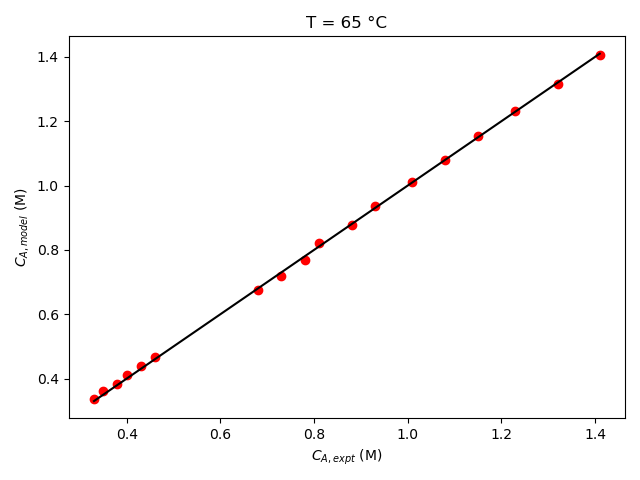
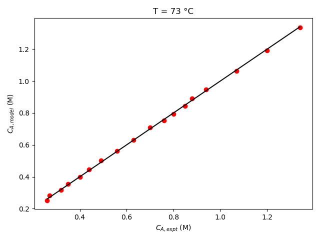
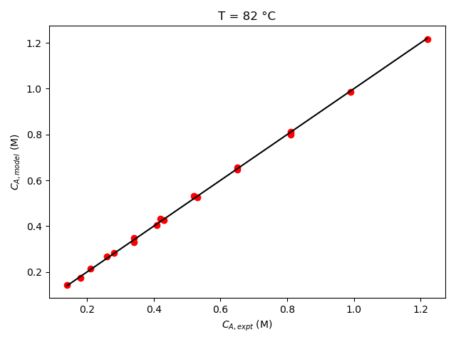
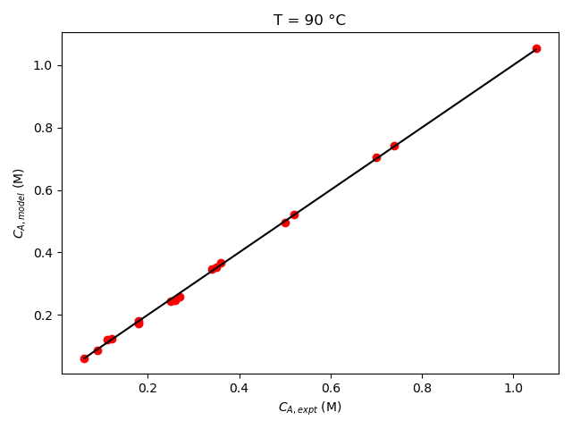
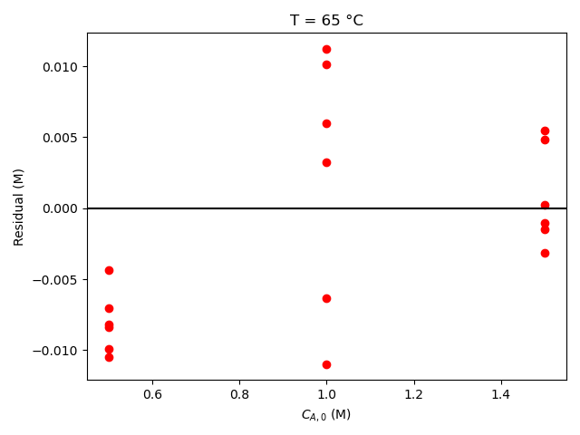
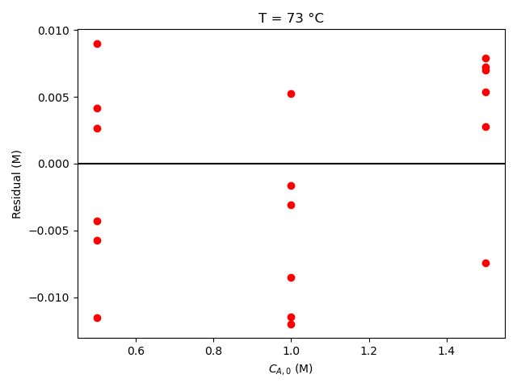
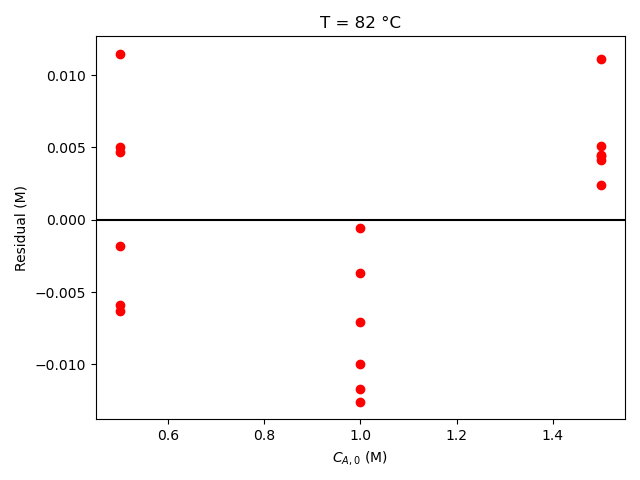
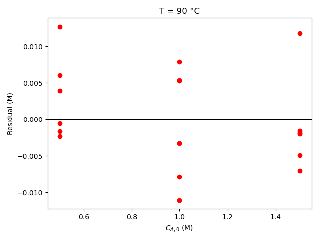
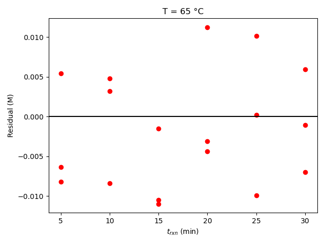
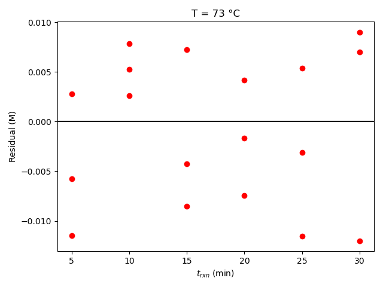
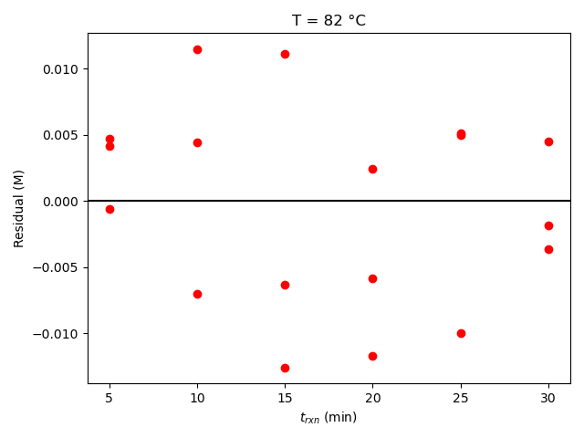
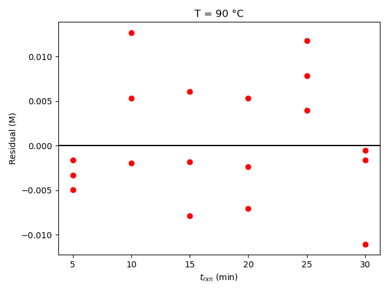
The Arrhenius expression was fit to the rate coefficients shown in Table 19.3 with the following results.
k0: 5.03 x 108 min-1, 95% CI [3.73 x 108, 6.78 x 108]
E: 68.5 kJ mol-1, 95% CI [67.6, 69.4]
R2: 1
The Arrhenius plot is shown in Figure 19.7.
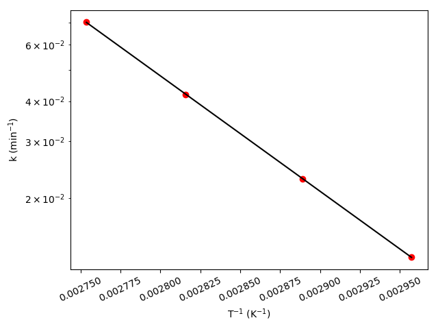
Assessment
Click Here to See What an Expert Might be Thinking at this Point
In assessing the accuracy I need to consider the fit of the model to the data for each of the experimental temperature levels and the fit of the Arrhenius expression to the resulting \(k\) vs. \(T\) data. The coefficient of determination, \(R^2\), is extremely close to 1.0 in all cases, indicating high accuracy. In the four parity plots, Figure 19.4, and in the Arrhenius plot, Figure 19.7, the experimental data points are all close to the line representing the model, again indicating an accurate model. In the residuals plots, Figure 19.5 and Figure 19.6, and the Arrhenius plot, Figure 19.7, the experimental data points scatter randomly about the line representing the model with no apparent systematic trends in the deviations. This, too, suggests an accurate model. Finally, for each estimated parameter, the upper and lower limits of the 95% confidence intervals are very close in value to the estimated parameter. That is, the uncertainty in the estimated parameters is small, yet again indicative of an accurate model.
The coefficients of determination, parameter uncertainties, parity plots, residuals plots and Arrhenius plot all indicate that rate expression in equation (2) is very accurate when the Arrhenius expression is used to represent the temperature dependence of \(k\). Equation (2) should be accepted as the rate expression with 5.03 x 108 min-1 as the pre-exponential factor and 68.5 kJ mol-1 as the activation energy.
19.5.1.2 Differential Data Analysis
Click Here to See What an Expert Might be Thinking at this Point
I know that in a differential data analysis the mole balance design equation 19.1, is approximated using Equation 19.3. Here I will use backwards differences for the approximation, (see Appendix B).
\[ \frac{dn_i}{dt} = \nu_i r V \approx \frac{\Delta n_i}{\Delta t} = \nu_i r V \]
I then need to substitute the rate expression into the approximate design equation for one of the reactants or products and linearize the resulting equation. There is only one rate expression parameter, so the linearized response model will take the form \(y=mx\).
For each block of same-temperature data, I will need to calculate \(x\) and \(y\) using the experimental data and then estimate the value of \(m\). This can all be done using a spreadsheet, if desired. That will yield values of \(k\) at each of the experimental temperature levels. The Arrhenius expression can then be fit to the resulting estimated \(k\) values.
Here I will write the mole balance on A, substituting its stoichiometric coefficient (-1) and the rate expression, equation (2).
Approximate Reactor Model
\[ \frac{n_A \Big\vert_{t=t_i} - n_A \Big\vert_{t=t_{i-1}}}{t_i - t_{i-1}} = -k C_A \Big\vert_{t=t_i} V \tag{7} \]
Click Here to See What an Expert Might be Thinking at this Point
Looking at equation (7), I see that it already has a linear form.
Linearized Response Model
Defining \(x\) and \(y\) as shown in equations (8) and (9), it can be seen that equation (7) has the linear form shown in equation (10).
\[ x = C_A \Big\vert_{t=t_i} V \tag{8} \]
\[ y = \frac{n_A \Big\vert_{t=t_i-1} - n_A \Big\vert_{t=t_i}}{t_i - t_{i-1}} \tag{9} \]
\[ y=kx \tag{10} \]
Click Here to See What an Expert Might be Thinking at this Point
I need to calculate \(x\) and \(y\) for each experimental data point. The values of \(V\), \(t_i\), \(t_{i-1}\), and \(C_A \Big\vert_{t=t_i}\) are known, so expressions to calculate \(n_A \Big\vert_{t=t_i}\) and \(n_A \Big\vert_{t=t_{i-1}}\) are needed. In both instances, the defining equation for concentration in a closed system can be used.
Ancillary Equations
\[ n_A \Big\vert_{t=t_i} = C_A \Big\vert_{t=t_i} V \tag{11} \]
\[ n_A \Big\vert_{t=t_i-1} = C_A \Big\vert_{t=t_i-1} V \tag{12} \]
Calculations
- For each temperature level used in the experiments:
- Calculate the values of \(x\) and \(y\) for each experiment using equations (8), (9), (11), and (12).
- Using a spreadsheet or linear least squares software, fit equation (10) to the resulting data.
- Use the resulting value of \(k\) to create a model plot (\(y\) vs. \(x\) as points and the model, \(y=kx\), as a line) for that temperature.
- Fit the Arrhenius expression to the \(k\) vs. \(T\) data from step 1b. (see Example 4.5.4)
Results
The parameter estimation results are listed in Table 19.4. Figure 19.8 shows the model plots.
| T (°C) | k | R2 |
|---|---|---|
| 65 | 0.0136 min-1, 95% CI [0.0126, 0.0145] | 0.982 |
| 73 | 0.0243 min-1, 95% CI [0.0227, 0.0258] | 0.985 |
| 82 | 0.0466 min-1, 95% CI [0.0453, 0.0479] | 0.997 |
| 90 | 0.0846 min-1, 95% CI [0.0817, 0.0875] | 0.996 |

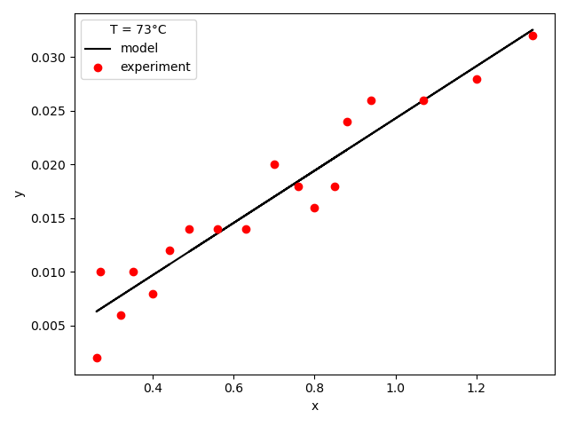
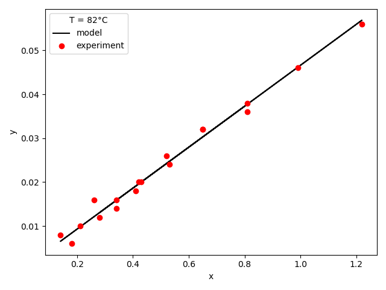
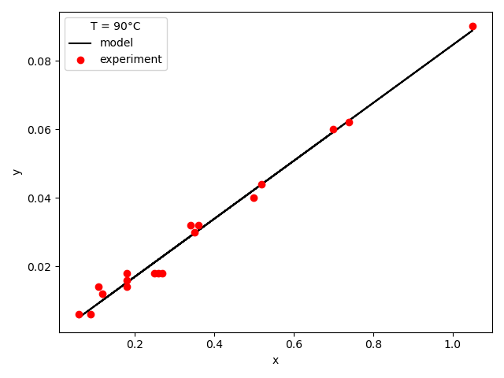
The Arrhenius expression was fit to the rate coefficients shown in Table 19.4 with the following results.
k0: 4.42 x 109 min-1, 95% CI [5.83 x 108, 3.36 x 1010]
E: 74.6 kJ mol-1, 95% CI [68.7, 80.5]
R2: 0.999
The Arrhenius plot is shown in Figure 19.9.
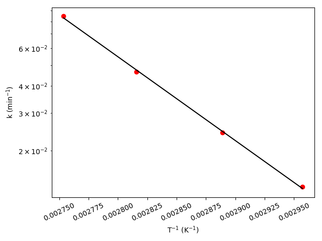
Assessment
Click Here to See What an Expert Might be Thinking at this Point
As was the case for the analysis using a response function, every assessment criterion indicates that the rate expression is accurate.
- The coefficient of determination, \(R^2\), is close to 1.0 in all cases.
- In the four model plots, Figure 19.8, and in the Arrhenius plot, Figure 19.9, the experimental data points are all close to the line representing the model and the experimental data points scatter randomly about the line representing the model, with no apparent systematic trends in the deviations from the line.
- For each estimated parameter, other than \(k_0\), the upper and lower limits of the 95% confidence intervals are close in value to the estimated parameter. That is, the uncertainty in the estimated parameters is small. It is not uncommon for the uncertainty in pre-exponential factors to be relatively large.
The coefficients of determination, parameter uncertainties, parity plots, residuals plots and Arrhenius plot all indicate that rate expression in equation (2) is accurate when the Arrhenius expression is used to represent the temperature dependence of \(k\). Equation (2) should be accepted as the rate expression with 4.42 x 109 min-1 as the pre-exponential factor and 74.6 kJ mol-1 as the activation energy.
19.5.1.3 Comparison
The accuracy criteria suggested that the model obtained using differential analysis and that obtained using a response function were both sufficiently accurate to accept. However, the parameter estimates from the two analyses were not equal. The model that resulted from the differential analysis appears to be less accurate than that resulting from analysis using a response function. In particular in the differential analysis the coefficients of determination are not as close to 1.0, there is more scatter in the model plots (compared to the parity plots), and the uncertainty in the estimated parameters is greater.
The same data and the same rate expression were used in both analyses. They differed in the reactor models used. Not surprisingly, the results with the greater uncertainty were obtained using an approximate reactor model. In general, analysis should be performed using the true reactor model (i. e. using a response function) to avoid the additional uncertainty resulting from the use of an approximate model.
19.5.2 Analysis Using a Linearized Reactor Model
The gas-phase reaction between reagents A and B was studied in an ideal, isothermal, 500 cm3 BSTR. In all experiments the reactor was charged with reagents A and B only, but with varying partial pressures. The fractional conversion of reagent A was measured at seven different elapsed times in each experiment. Experiments were performed at three different temperatures. A total of 189 data points were recorded. Use a linearized reactor model to assess the accuracy of the rate expression shown in equation (2) and compare the results to an analysis using a response function. \[ A + B \rightarrow Y + Z \tag{1} \]
\[ r = k P_A P_B \tag{2} \]
The first few data points are shown in Table 19.5. The full data set is available in the file reb_19_2_data.csv.
| T (°C) | PA,0 (atm) | PB,0 (atm) | trxn (min) | fA |
|---|---|---|---|---|
| 475 | 0.5 | 0.5 | 0.5 | 0.019 |
| 475 | 0.5 | 0.5 | 1.0 | 0.036 |
| 475 | 0.5 | 0.5 | 1.5 | 0.052 |
| 475 | 0.5 | 0.5 | 2.0 | 0.054 |
| 475 | 0.5 | 0.5 | 2.5 | 0.081 |
Click Here to See What an Expert Might be Thinking at this Point
I can see that this is a kinetics data analysis problem, and as such, I know generally how to proceed (see the expert thinking callout at the start of this section). I will start by summarizing the information provided in the assignment.
Reactor: BSTR
Given: \(V = 500\text{ cm}^3\).
Adjusted Inputs: \(\underline{T}\), \(\underline{P}_{A,0}\), \(\underline{P}_{B,0}\), and \(\underline{t}_{rxn}\)
Experimental Response: \(\underline{f}_{A,\text{ expt}}\)
Rate Expression Parameter: \(k\)
The experiments were performed at one of three temperature levels, so three same-temperature blocks of data can be created from the full data set.
Click Here to See What an Expert Might be Thinking at this Point
The assignment asks me to perform the data analysis twice. The information above applies for both analyses. I’ll do the analysis using a response function first. To create a response function I need to first write the design equations for the reactor. Since the experimental reactor was isothermal, only the mole balance design equations are needed to model the reactor.
19.5.2.1 Analysis using a Response Function
Reactor Model
Mole balance design equations for reagents A, B, Y, and Z are presented in equations (3) through (6). The initial values and stopping criterion needed to solve them are listed in Table 19.6.
\[ \frac{dn_A}{dt} = -Vr \tag{3} \]
\[ \frac{dn_B}{dt} = -Vr \tag{4} \]
\[ \frac{dn_Y}{dt} = Vr \tag{5} \]
\[ \frac{dn_Z}{dt} = Vr \tag{6} \]
| Variable | Initial Value | Stopping Criterion |
|---|---|---|
| \(t\) | \(0\) | \(t_{rxn}\) |
| \(n_A\) | \(n_{A,0}\) | |
| \(n_B\) | \(n_{B,0}\) | |
| \(n_Y\) | \(0\) | |
| \(n_Z\) | \(0\) |
Click Here to See Where That Came From
When a single reaction occurs in an ideal BSTR, the mole balance design equation is given by Equation 19.1.
\[ \frac{dn_i}{dt} = \nu_i r V \]
Writing that equation once for each reagent and substituting the stoichiometric coefficients of A (-1), B (-1), Y (1), and Z (1) yields equations (3) through (6).
The instant the reaction starts can be defined as \(t=0\). The moles of reagents A and B at that instant can be represented by \(n_{A,0}\) and \(n_{B,0}\). The assignment states that the reactor was charged with only reagents A and B, so reagents Y and Z were not present, i. e. their molar amounts at \(t=0\) are zero. The response was measured at \(t_{rxn}\), so the stopping criterion is \(t=t_{rxn}\).
Click Here to See What an Expert Might be Thinking at this Point
The design equations are IVODEs. The independent variable is \(t\) and the dependent variables are \(n_A\), \(n_B\), \(n_Y\), and \(n_Z\). In order to solve those IVODEs numerically I need to go through the design equations, initial values and stopping criterion and express every quantity that is in them, or that gets subtituted into them, in terms of known constants, the independent variable and the dependent variables.
The design equations will be solved within a response function so that the adjusted inputs, \(\underline{T}\), \(\underline{P}_{A,0}\), \(\underline{P}_{B,0}\), and \(\underline{t}_{rxn}\), and the rate expression parameter, \(k\), will be available. When the rate expression, equation (2) is substituted into the design equations it will introduce the partial pressures of A and B. The ideal gas law can be used to calculate them.
The initial molar amounts of A and B are not provided in the assignment, either. They also can be calculated using the ideal gas law since the assignment does provide their initial partial pressures.
Thus, I need ancillary equations to calculate the \(P_A\), \(P_B\), \(n_{A,0}\), and \(n_{B,0}\) using known constants, \(t\), \(n_A\), \(n_B\), \(n_Y\), and \(n_Z\).
Ancillary Equations
\[ P_A = \frac{n_ART}{V} \tag{7} \]
\[ P_B = \frac{n_BRT}{V} \tag{8} \]
\[ n_{A,0} = \frac{P_{A,0}V}{RT} \tag{9} \]
\[ n_{B,0} = \frac{P_{B,0}V}{RT} \tag{10} \]
Click Here to See What an Expert Might be Thinking at this Point
The design equations will be solved within a response function to obtain the values of \(n_A\), \(n_B\), \(n_Y\), and \(n_Z\) at \(t=t_{rxn}\). That result must then be used to calculate the predicted value of the experimental response, \(f_A\). The defining equation for the fractional conversion will serve this purpose.
Response Calculation
\[ f_A = \frac{n_{A,0} - n_A}{n_{A,0}} \tag{11} \]
Click Here to See What an Expert Might be Thinking at this Point
Now I can create the response function. It will receive the adjusted inputs and the rate expression parameter as arguments. With those values, the design equations can be solved numerically as described above. The resulting value of \(n_A\) at \(t_{rxn}\) can be used to calculate the conversion of A and return its value.
Response Function
The response function is created with the following structure:
- The adjusted inputs, \(\underline{T}\), \(\underline{P}_{A,0}\), \(\underline{P}_{B,0}\), and \(\underline{t}_{rxn}\), and the rate expression parameter, \(k\), are passed to it as arguments.
- Variables are defined and assigned the values of all known and given quantities.
- A function that evaluates the design equations given values of the independent variable, \(t\), and the dependent variables, \(n_A\), \(n_B\), \(n_Y\), and \(n_Z\) is defined. It
- Calculates \(P_A\) and \(P_B\) using equations (7) and (8).
- Calculates \(r\) using equation (2).
- Evaluates and returns the derivatives, equations (3) through (6).
- For each experiment the response function
- Calculates \(n_{A,0}\) and \(n_{B,0}\) using equations (9) and (10).
- Solves the design equations using the initial values and stopping criterion in Table 19.6 to find \(n_A\), \(n_B\), \(n_Y\), and \(n_Z\) at \(t_{rxn}\).
- Calculates \(f_A\) at \(t_{rxn}\) using equation (11).
- The values of \(f_A\) for all of the experiments are returned.
Click Here to See What an Expert Might be Thinking at this Point
Having created the response function, I can now use it to estimate the rate expression parameter, \(k\), at each of the experimental temperature levels. To do so I will use parameter estimation software of my choosing. I will write a simple program that passes the adjusted inputs, the measured responses, and a guess for the rate expression parameter to that parameter estimation software. I will exectute this program using each of the same-temperature data blocks, and it will return the best estimate for \(k\), some measure of the uncertainty in \(k\), and the coefficient of determination, \(R^2\), for each experimental temperature level.
Using the resulting value of \(k\) for each data block, I then can calculate the model-predicted response and the residual (difference between the measured response and the model-predicted response) for each eperiment. Additionally, as described in Chapter 18, a parity plot and residuals plots can be created.
To complete the analysis, I will fit the Arrhenius expression to the resulting \(k\) vs. \(T\) data. (see Example 4.5.4)
Calculations
- For each temperature level used in the experiments:
- Pass the response function, the adjusted inputs for that temperature, and the experimental responses for that temperature to parameter estimation software to find \(k\), the uncertainty in \(k\), and the coefficient of determination, \(R^2\), for that temperature.
- Use the resulting value of \(k\) to create a parity plot (\(C_{A,\text{ expt}}\) vs. \(C_{A,\text{ model}}\)) and residuals plots (\(C_{A,\text{ expt}}\) - \(C_{A,\text{ model}}\) vs. \(C_{A,0}\) and vs. \(t_{rxn}\)) for that temperature.
- Fit the Arrhenius expression to the \(k\) vs. \(T\) data from step 1a. (see Section 4.5.4)
Results
The parameter estimation results are listed in Table 19.7. Figure 19.10 shows the parity plots, Figure 19.11 shows the residuals plots for \(P_{A,0}\), Figure 19.12 shows the residuals plots for \(P_{B,0}\), and Figure 19.13 shows the residuals plots for \(t_{rxn}\).
| T (°C) | k | R2 |
|---|---|---|
| 475 | 1.09 x 10-6 min-1, 95% CI [1.08 x 10-6, 1.11 x 10-6] | 0.998 |
| 500 | 1.76 x 10-6 min-1, 95% CI [1.74 x 10-6, 1.77 x 10-6] | 0.999 |
| 525 | 2.73 x 10-6 min-1, 95% CI [2.71 x 10-6, 2.75 x 10-6] | 0.999 |

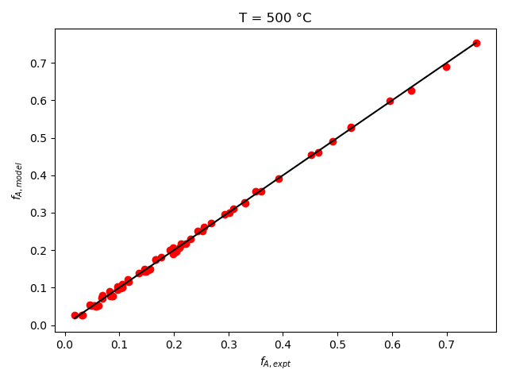
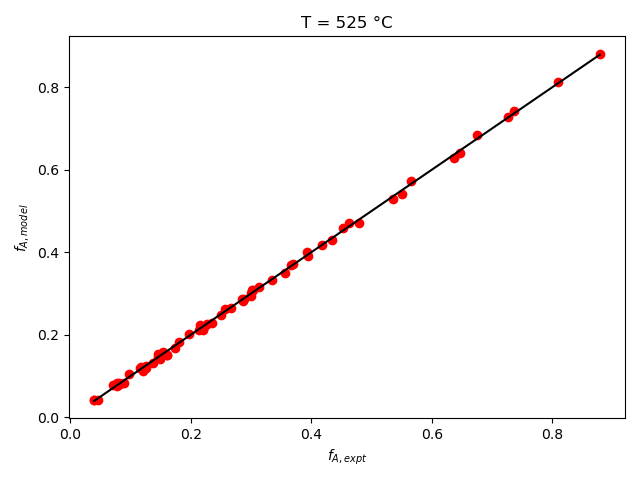
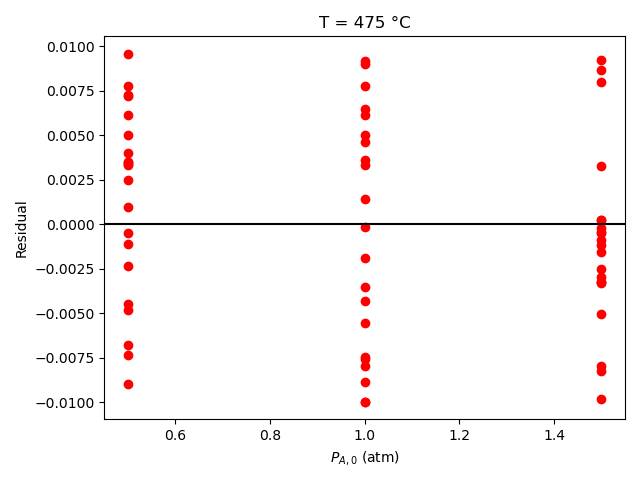
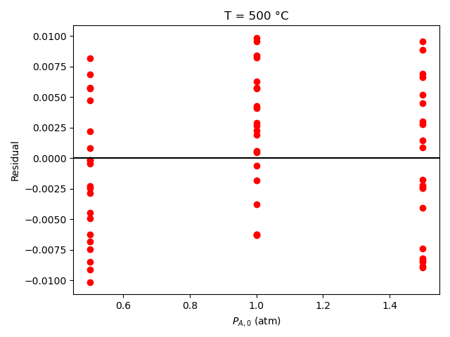
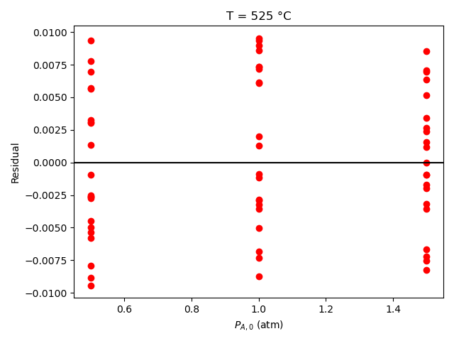
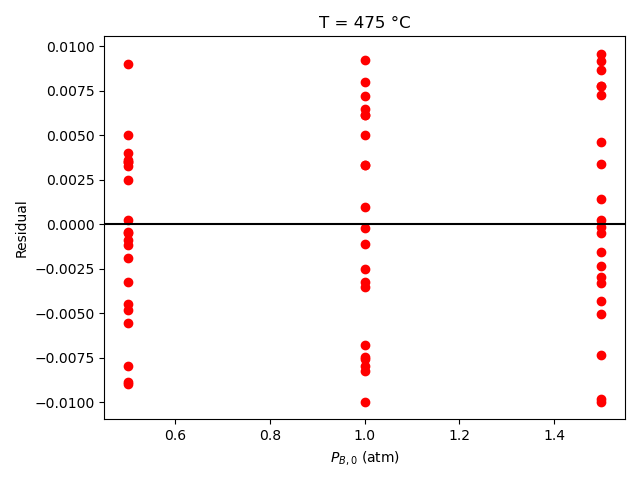
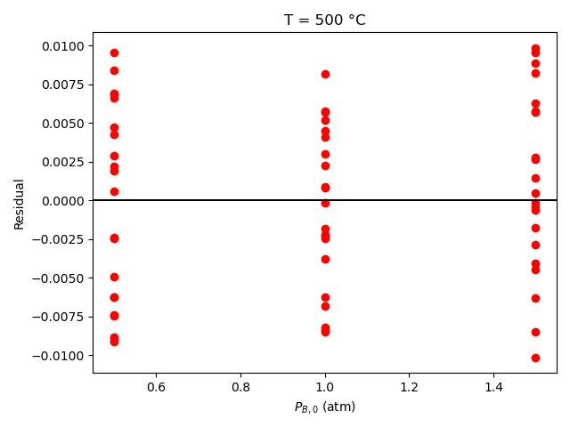
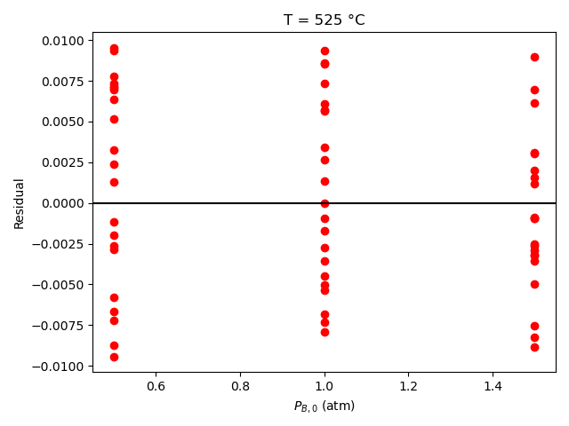
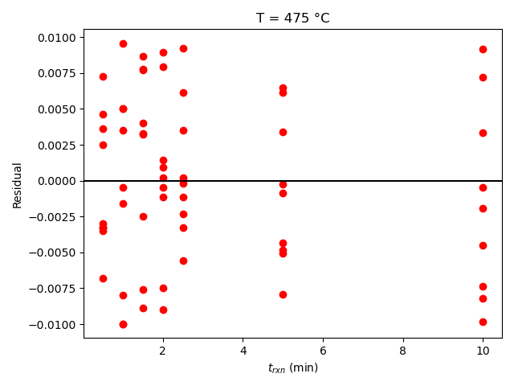
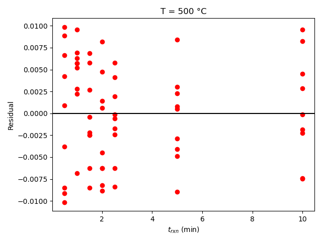
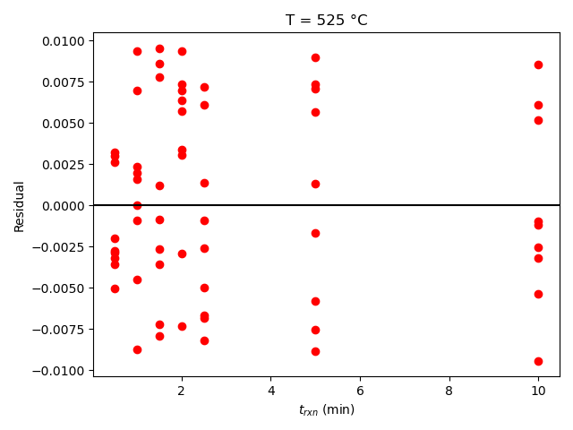
The Arrhenius expression was fit to the rate coefficients shown in Table 19.7 with the following results.
k0: 2.36 min-1, 95% CI [1.69, 3.29]
E: 21.7 kJ mol-1, 95% CI [21.2, 22.2]
R2: 1
The Arrhenius plot is shown in Figure 19.14.
Assessment
Click Here to See What an Expert Might be Thinking at this Point
I now need to assess the accuracy of the model and make a decision whether to accept it, recommend additional experiments, or reject it. Here, all of the accuracy criteria are satisfied.
- The coefficient of determination is close to 1.0 for each of the three temperature levels and for the Arrhenius plot.
- The upper and lower limits of the 95% confidence interval are close to the parameter value for all three estimates of \(k\) and for the estimate of \(E\). The confidence interval for \(k_0\) is very large, but this is often seen for the pre-exponential factor.
- The data points in the parity plots all lie close to the diagonal line and those in the Arrhenius plot fall almost exactly on the line representing the Arrhenius expression.
- The data points in the residuals plots scatter randomly about zero and the data points in the Arrhenius plot scatter randomly from the line. In all cases no apparent trend can be seen in the deviations.
These results indicate that the model is accurate and should be accepted.
The rate expression in equation (2) is accurate when the Arrhenius expression is used to represent the temperature dependence of \(k\). Equation (2) should be accepted as the rate expression with 2.36 min-1 as the pre-exponential factor and 21.7 kJ mol-1 as the activation energy.
19.5.2.2 Analysis using a Linearized Reactor Model
Click Here to See What an Expert Might be Thinking at this Point
The assignment instructs me to repeat the analysis using a linearized reactor model. That means I must use a single mole balance on one of the products or reactants to model the reactor. (Because the reactor is isothermal, I can solve the mole balance independently of the energy balances.) The response in this problem is the fractional conversion of reagent A, so I’ll write the mole balance on reagent A.
The mole balance will be a differential equation. I know that I will need to solve that IVODE analytically before I’ll be able to linearize the model.
Linearized Reactor Model
A mole balance on reagent A is shown in equation (12), where the rate expression, equation (2) has been substituted into the mole balance.
\[ \frac{dn_A}{dt} = -kVP_AP_B \tag{12} \]
Click Here to See What an Expert Might be Thinking at this Point
I need to solve equation (12) analytically before I can linearize it. To do that, I need to express every variable quantity appearing in it in terms of the dependent variable, \(n_A\), and the independent variable \(t\). In any one experiment, \(k\) and \(V\) will be constant, but \(P_A\) and \(P_B\) will change as the reaction proceeds. Consequently, I need to express \(P_A\) and \(P_B\) in terms of \(n_A\) and \(t\).
Using the ideal gas law, the partial pressures can be eliminated, equation (13).
\[ \frac{dn_A}{dt} = -kV\left( \frac{n_ART}{V} \right)\left( \frac{n_BRT}{V} \right) = \frac{-k\left(RT\right)^2}{V}n_An_B \tag{13} \]
Click Here to See What an Expert Might be Thinking at this Point
Expressing \(P_B\) using the ideal gas law introduced the molar amount of B, \(n_B\). Next it must be expressed in terms of \(n_A\) and \(t\). This can be accomplished using the apparent extent of reaction (see Chapter 3).
Start by expressing the molar amount of reagent B in terms of its initial amount and the apparent extent of the reaction.
\[ n_B = n_{B,0} - \xi \]
Then express \(\xi\) in terms of the molar amount of reagent A.
\[ n_A = n_{A,0} - \xi \qquad \Rightarrow \qquad \xi = n_{A,0} - n_A \]
Substuting the second expression into the first gives an expression for the molar amount of reagent B.
\[ n_B = n_{B,0} - n_{A,0} + n_A \]
After expressing the molar amount of B in terms of the molar amount of A, equation (14) results.
\[ \frac{dn_A}{dt} = \frac{-k\left(RT\right)^2}{V}n_A\left( n_{B,0} - n_{A,0} + n_A \right) \tag{14} \]
Separation of variables and integration then leads to equation (15).
\[ \frac{1}{n_{A,0}-n_{B,0}} \ln{\frac{n_{A,0}\left( n_{B,0} - n_{A,0} + n_A \right)}{n_{B,0}n_A}} = \frac{-k\left(RT\right)^2}{V} t\tag{15} \]
Click Here to See Where That Came From
Rearrange equation (15) so only \(n_A\) appears on the left side and only \(t\) appears on the right.
\[ \frac{dn_A}{n_A\left( n_{B,0} - n_{A,0} + n_A \right)} = \frac{-k\left(RT\right)^2}{V}dt \]
Then integrate noting that at \(t=0\), \(n_A = n_{A,0}\), at any later time, \(t\), the molar amount of reagent A is \(n_A\), and \(k\), \(R\), \(T\), and \(V\) are constants that can be taken outside of the integral.
\[ \int_{n_{A,0}}^{n_A}\frac{dn_A}{n_A\left( n_{B,0} - n_{A,0} + n_A \right)} = \frac{-k\left(RT\right)^2}{V}\int_{t_0}^tdt \]
\[ \frac{1}{n_{B,0}-n_{A,0}} \left(\ln{\frac{ n_{B,0} - n_{A,0} + n_A }{n_A}}\right)\Bigg\vert_{n_{A,0}}^{n_A} = \frac{-k\left(RT\right)^2}{V} t\Big\vert_{t_0}^t \]
Evaluating at the upper and lower limits and taking the difference on each side then yields equation (15).
Click Here to See What an Expert Might be Thinking at this Point
Looking at equation (15), I can see that the first fraction will become infinite if \(n_{A,0} = n_{B,0}\), and some of the experiments have equal initial partial pressures of reagents A and B. If \(n_{A,0} = n_{B,0}\) then \(n_A\) will equal \(n_B\) at all times because one A is consumed every time one B is consumed in the reaction. In this case, the rate expression becomes \(r=kP_A^2\), so the reactor model is as follows.
\[ \frac{dn_A}{dt} = -kVP_A^2 \]
Rearrange so only \(n_A\) appears on the left side and only \(t\) appears on the right.
\[ \frac{dn_A}{n_A^2} = \frac{-k\left(RT\right)^2}{V}dt \]
Then integrate noting that at \(t=0\), \(n_A = n_{A,0}\), at any later time, \(t\), the molar amount of reagent A is \(n_A\), and \(k\), \(R\), \(T\), and \(V\) are constants that can be taken outside of the integral.
\[ \int_{n_{A,0}}^{n_A}\frac{dn_A}{n_A^2} = \frac{-k\left(RT\right)^2}{V}\int_{t_0}^tdt \]
\[ \frac{-1}{n_A}\Bigg\vert_{n_{A,0}}^{n_A} = \frac{-k\left(RT\right)^2}{V} t\Big\vert_{t_0}^t \]
Evaluating at the upper and lower limits and taking the difference on each side then yields equation (16), below.
If \(n_{A,0} = n_{B,0}\), separation of variables and integration leads to equation (16).
\[ \frac{1}{n_{A,0}} - \frac{1}{n_A} = \frac{-k\left(RT\right)^2}{V} t\tag{16} \]
Note
Someone just starting to learn about kinetic data analysis might not have noticed that the initial fraction in equation (15) will become infinite if \(n_{A,0} = n_{B,0}\). In that case, the analysis would have failed a little later, indicating that something was wrong. Eventually the new learner might figure out the problem, but this is one of those times when a little prior experience (or the ability to ask a teacher who has such experience) really helps.
Click Here to See What an Expert Might be Thinking at this Point
Having solved the mole balance ODE, the next step is to linearize it. In this problem nothing needs to be done. It is already linear. That means that I next need to calculate the values of \(x\) and \(y\) for each experimental data point.
If \(y\) is defined as shown in equation (17) for experiments where \(n_{A,0} = n_{B,0}\), or as shown in equation (18) when \(n_{A,0} \ne n_{B,0}\), and \(x\) is defined as shown in equation (19), it can be seen that the model for both cases is a linear equation with a slope equal to \(k\), equation (20).
\[ y = \frac{1}{n_{A,0}} - \frac{1}{n_A} \tag{17} \]
\[ y = \frac{1}{n_{B,0}-n_{A,0}} \ln{\frac{n_{A,0}\left( n_{B,0} - n_{A,0} + n_A \right)}{n_{B,0}n_A}} \tag{18} \]
\[ x = \frac{-t\left(RT\right)^2}{V} \tag{19} \]
\[ y=kx \tag{20} \]
Ancillary Equations
Click Here to See What an Expert Might be Thinking at this Point
Now that I have a linearized model, I need to calculate \(x\) and \(y\) for every experiment and then fit equation (20) to the resulting data. Looking at equations (17) through (19) I see that to calculate \(y\) I will need the initial molar amounts of reagents A and B and the final amount of reagent A. The initial molar amounts can be calculated using equations (9) and (10), but I need an equation for \(n_A\). The initial amount of A and its conversion are known, and can be used to calculate \(n_A\).
\[ n_A = n_{A,0} \left( 1 - f_A \right) \tag{21} \]
Calculations
- For each temperature level used in the experiments:
- Calculate \(n_{A,0}\), \(n_{B,0}\), and \(n_A\) using equations (9), (10), and (21).
- Calculate the values of \(x\) and \(y\) for each experiment using equations (17) or (18) and equation (19).
- Using a spreadsheet or linear least squares software, fit equation (20) to the resulting data.
- Use the resulting value of \(k\) to create a model plot (\(y\) vs. \(x\) as points and the model, \(y=kx\), as a line) for that temperature.
- Fit the Arrhenius expression to the \(k\) vs. \(T\) data from step 1c. (see Example 4.5.4)
Results
The parameter estimation results are listed in Table 19.8. Figure 19.15 shows the model plots.
| T (°C) | k | R2 |
|---|---|---|
| 475 | 1.09 x 10-6 min-1, 95% CI [1.08 x 10-6, 1.1 x 10-6] | 0.999 |
| 500 | 1.75 x 10-6 min-1, 95% CI [1.74 x 10-6, 1.77 x 10-6] | 0.999 |
| 525 | 2.74 x 10-6 min-1, 95% CI [2.72 x 10-6, 2.77 x 10-6] | 0.999 |
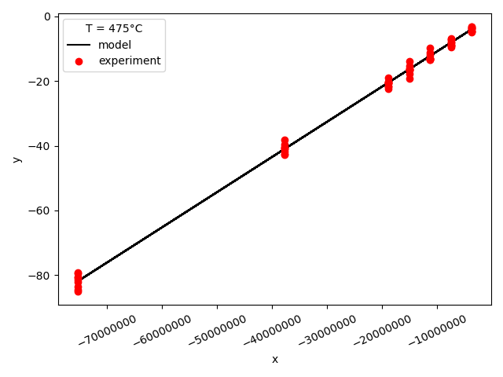
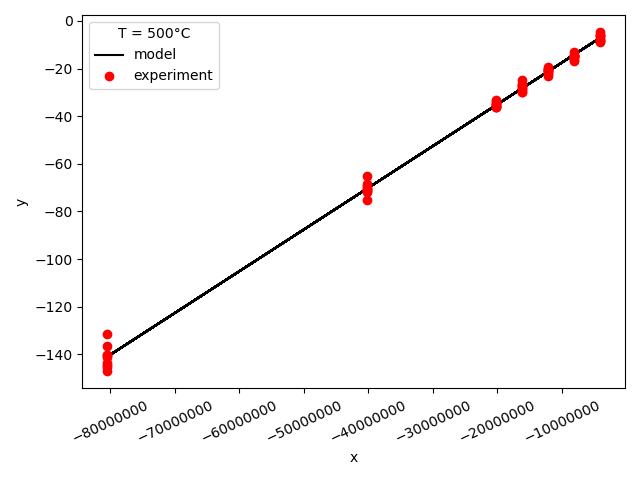
The Arrhenius expression was fit to the rate coefficients shown in Table 19.8 with the following results.
k0: 2.9 min-1, 95% CI [2.73, 3.08]
E: 22 kJ mol-1, 95% CI [21.9, 22.1]
R2: 1
The Arrhenius plot is shown in Figure 19.16.
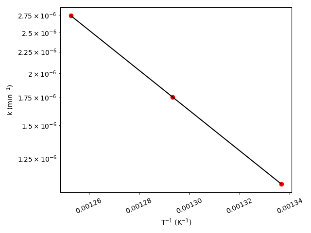
Assessment
Click Here to See What an Expert Might be Thinking at this Point
I now need to assess the accuracy of the model and make a decision whether to accept it, recommend additional experiments, or reject it. As was the case when using the response function, all of the accuracy criteria are satisfied, and the rate expression should be accepted.
- The coefficient of determination is close to 1.0 for each of the three temperature levels and for the Arrhenius plot.
- The upper and lower limits of the 95% confidence interval are close to the parameter value for all three estimates of \(k\) and for the estimate of \(E\). The confidence interval for \(k_0\) is larger, but again, this is often seen for the pre-exponential factor.
- The data points in the model plots and the Arrhenius plot all lie close to the line representing the model.
- The data points in the model and Arrhenius plots scatter randomly from the line representing the model, and there is no apparent trend in the deviations.
The rate expression in equation (2) is accurate when the Arrhenius expression is used to represent the temperature dependence of \(k\). Equation (2) should be accepted as the rate expression with 2.9 min-1 as the pre-exponential factor and 22 kJ mol-1 as the activation energy.
19.5.2.3 Comparision of the Two Analyses
The two analyses produce virtually identical results. This is expected because the same data set and rate expression were used, and neither of the reactor models introduces any approximations. Recall, when a differential analysis was used in Example 19.5.1, there was greater uncertainty in the parameters obtained by differential analysis because differential data analysis uses an appeoximate mole balance equation.
Analysis using a linearized model, as in this example, is just as accurate as analysis using a response function. The only issues associated with using a linearized model are that for some rate expressions it may not be possible to solve the mole balance design equation analytically, and when it can be solved analytically, it may not be possible to linearize it. Analysis using a response function can always be used.
19.5.3 A Gas-Phase Reaction With Total Pressure as the Response
An ideal, 100 cm3, isothermal BSTR was used to generate kinetics data for reaction (1) at several temperatures. In a typical experiment at any one temperature, reagent A was added to the reactor at that temperature and a pressure of \(P_{A,0}\). Then, to begin the reaction, a sufficient amount of reagent B at the same temperature was added instantaneously to bring the total pressure to 6.0 atm. The reaction progress was followed by recording the total pressure once per minute for 24 min after the addition of reagent B. Use the resulting experimental data below from three experiments at 275 °C to assess the accuracy of the rate expression shown in equation (2) at 275 °C. \[ A + B \rightarrow Z \tag{1} \]
\[ r = k P_A \sqrt{P_B} \tag{2} \]
The first few data points are shown in Table 19.9. The full data set is available in the file reb_19_3_data.csv.
| PA,0 (atm) | trxn (min) | P (atm) |
|---|---|---|
| 2 | 1 | 5.77 |
| 2 | 2 | 5.47 |
| 2 | 3 | 5.27 |
| 2 | 4 | 5.18 |
| 2 | 5 | 5.00 |
Click Here to See What an Expert Might be Thinking at this Point
This is a kinetics data analysis assignment. It describes reactor experiments, provides the data from those experiments, and asks me to assess the accuracy of a proposed rate expression. I will solve it using a response function. The response function will be passed the adjusted inputs and the rate expression parameters as arguments, so I will start by summarizing the information provided in the assignment and identifying those quantities.
Reactor Type: BSTR
Given Constants: \(V=100 \text{ cm}^3\), \(P_0=6 \text{ atm}\), \(T=275\text{ °C}\).
Adjusted Inputs: \(\underline{P}_{A,0}\) and \(\underline{t}_{rxn}\)
Experimental Responses: \(\underline{P}\)
Rate Expression Parameter: \(k\)
Click Here to See What an Expert Might be Thinking at this Point
Within the response function, I’ll first need to solve the reactor design equations, so I’ll begin by generating the design equations and formulating their solution. Here the reactor is a stirred tank, so there isn’t a momentum balance. Furthermore, the reactor operates isothermally, so I can solve the mole balance design equations independently of the energy balance design equations. For an isothermal BSTR with only one reaction taking place, the general form of the mole balance design equation is given in Equation 19.1.
\[ \frac{dn_i}{dt} = \nu_i r V \]
This system has 3 reagents, A, B, and Z, and their stoichiometric coefficients are -1, -1, and 1, respectively. With that knowledge, I can write the mole balances. Defining \(t=0\) as the instant reagent B is added and the reaction starts, I can let \(n_{A,0}\) and \(n_{B,0}\) represent the molar amounts of A and B present at \(t=0\), noting that reagent Z is not present at that instant. The response is measured at specific times, \(t_{rxn}\), so the stopping criterion is \(t=t_{rxn}\).
Reactor Model
Mole balance design equations for A, B, and Z are presented in equations (3), (4), and (5). The initial values and stopping criterion needed for solving them are given in Table 19.10.
\[ \frac{dn_A}{dt} = -rV \tag{3} \]
\[ \frac{dn_B}{dt} = -rV \tag{4} \]
\[ \frac{dn_Z}{dt} = rV \tag{5} \]
| Variable | Initial Value | Stopping Criterion |
|---|---|---|
| \(t\) | \(0\) | \(t_{rxn}\) |
| \(n_A\) | \(n_{A,0}\) | |
| \(n_B\) | \(n_{B,0}\) | |
| \(n_Z\) | \(0\) |
Click Here to See What an Expert Might be Thinking at this Point
The design equations are IVODEs. The independent variable is \(t\) and the dependent variables are \(n_A\), \(n_B\) and \(n_Z\). In order to solve those IVODEs numerically I need to go through the design equations, initial values and stopping criterion and express every quantity that is in them, or that gets subtituted into them, in terms of known constants, the independent variable and the dependent variables.
The design equations will be solved within a response function so that the adjusted inputs, \(\underline{P}_{A,0}\) and \(\underline{t}_{rxn}\), and the rate expression parameter, \(k\), will be available. When the rate expression, equation (2) is substituted into the design equations it will introduce the partial pressures of A and B. The ideal gas law can be used to calculate them. For reagent A, the initial partial pressure is an adjusted input. For reagent B, the initial partial pressure must be calculated from the initial total pressure and the initial partial pressure of A.
The initial molar amounts of A and B are not provided in the assignment, either. They also can be calculated using the ideal gas law since the assignment does provide their initial partial pressures.
Thus, I need ancillary equations to calculate \(P_A\), \(P_B\), \(n_{A,0}\), and \(n_{B,0}\) using known constants, \(t\), \(n_A\), \(n_B\), and \(n_Z\).
Ancillary Equations
\[ P_A = \frac{n_ART}{V} \tag{6} \]
\[ P_B = \frac{n_BRT}{V} \tag{7} \]
\[ n_A\Big\vert_{t=0} = n_{A,0} = \frac{P_{A,0}V}{RT} \tag{8} \]
\[ n_B\Big\vert_{t=0} = n_{B,0} = \frac{P_{B,0}V}{RT} \tag{9} \]
\[ P_{B,0} = P_0 - P_{A,0} \tag{10} \]
Click Here to See What an Expert Might be Thinking at this Point
At this point, the reactor design experiments can be solved to find \(n_A\), \(n_B\), and \(n_Z\) at \(t=t_{rxn}\). Within the response function, those results must be used to calculate the response predicted by the reactor model. The ideal gas law can be used to do that.
Response Calculation
\[ P = \frac{\left(n_A + n_B + n_Z\right)RT}{V} \tag{11} \]
Response Function
The response function is created with the following structure:
- The adjusted inputs, \(\underline{P}_{A,0}\) and \(\underline{t}_{rxn}\), and the rate expression parameter, \(k\), are passed to it as arguments.
- Variables are defined and assigned the values of all known and given quantities, \(V=100 \text{ cm}^3\), \(P_0=6 \text{ atm}\), and \(T=275\text{ °C}\).
- A function that evaluates the design equations given values of the independent variable, \(t\), and the dependent variables, \(n_A\), \(n_B\), and \(n_Z\) is defined. It
- Calculates \(P_A\) and \(P_B\) using equations (6) and (7).
- Calculates \(r\) using equation (2).
- Evaluates and returns the derivatives, equations (3) through (5).
- For each experiment the response function
- Calculates \(n_{A,0}\) and \(n_{B,0}\) using equations (8) through (10).
- Solves the design equations using the initial values and stopping criterion in Table 19.10 to find \(n_A\), \(n_B\), and \(n_Z\) at \(t_{rxn}\).
- Calculates \(P\) at \(t_{rxn}\) using equation (11).
- The values of \(P\) for all of the experiments are returned.
Click Here to See What an Expert Might be Thinking at this Point
Having created the response function, I can now use it to estimate the rate expression parameter, \(k\), at the experimental temperature, 275 °C. To do so I will use parameter estimation software of my choosing. I will write a simple program that passes the adjusted inputs, the measured responses, and a guess for the rate expression parameter to that parameter estimation software. It will return the best estimate for \(k\), some measure of the uncertainty in \(k\), and the coefficient of determination, \(R^2\).
Using the resulting value of \(k\), I can calculate the model-predicted responses for all of the experiments using the response function. Then, knowing the model-predicted responses I can calculate the residual (difference between the measured response and the model-predicted response) for each eperiment. Finally, as described in Chapter 18, I can create a parity plot and residuals plots.
Calculations
- Pass the response function, the adjusted inputs, and the experimental responses to parameter estimation software to find \(k\), the uncertainty in \(k\), and the coefficient of determination, \(R^2\).
- Use the resulting value of \(k\) to create a parity plot (\(P_{\text{expt}}\) vs. \(P_{\text{model}}\)) and residuals plots (\(P_{\text{expt}}\) - \(P_{\text{model}}\) vs. \(P_{A,0}\) and vs. \(t_{rxn}\)).
Results
To estimate the kinetics parameters, the response function described above was passed to parameter estimation software along with the adjusted experimental inputs, the experimental responses and a guess for the kinetics parameters. The results returned by that software are shown in Table 19.11.
| k | 1.62 x 10-6 mol cm-3 min-1 atm-1.5, 95% CI [1.62 x 10-6, 1.62 x 10-6] |
| R2 | 0.997 |
A parity plot of the measured responses vs. the model-predicated responses is presented in Figure 19.17, and residuals plots showing the difference between the measured and predicted responses vs. the initial partial pressure of A and vs. the reaction time are shown in Figure 19.18.
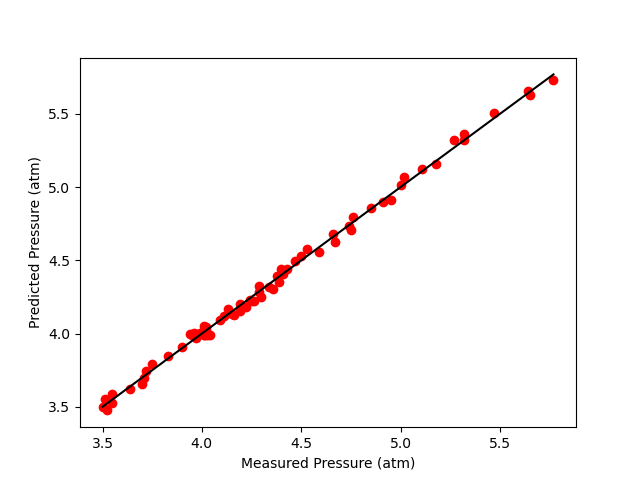
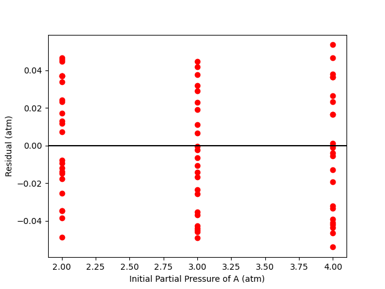
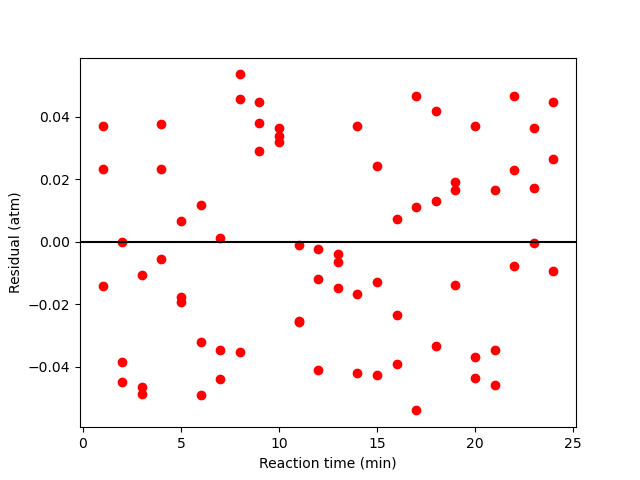
Click Here to See What an Expert Might be Thinking at this Point
The proposed model is quite accurate. Looking at the parity plot, the deviations of the data from the diagonal line is very small, and in the residuals plots, the deviations are random with no apparent trends. The difference between the upper and lower limits of the 95% confidence interval are small relative to the estimated value of the rate coefficient, and the coefficient of determination is nearly equal to 1.0.
Assessment
When the rate coefficient shown in Table 19.11 is used in the proposed rate expression, equation (2), the rate expression is acceptably accurate.
Note
In this example, data from a single same-temperature data block were analyzed. In a real-world situation, similar data blocks for other temperatures would be analyzed in the same way. The Arrhenius expression would then be fit to the resulting data. Fitting the Arrhenius expression to \(k\) vs. \(T\) data was illustrated in the first two examples in this chapter. The process here would be exactly the same as in Examples 19.5.1 and 19.5.2.
19.5.4 Assessing a Michaelis-Menten Rate Expression
The enzymatic dehydration of substrate S to product P, reaction (1), was studied in a 50 ml BSTR. Three experiments were performed. The temperature was the same in all three experiments, but the initial concentration of substrate S (mmol L-1) differed. At the start of each experiment product P was not present in the reactor. The reaction takes place in aqueous solution, so the concentration of water may be assumed to be constant. The concentration of product P (mmol L-1) was measured at 10 min intervals during 2 h of reaction in each of the experiments. Use the resulting data to assess the accuracy of the Michaelis-Menten rate expression, equation (2), for this reaction.
\[ S \rightarrow P + H_2O \tag{1} \]
\[ r = \frac{V_{max}C_S}{K_m + C_S} \tag{2} \]
The first few data points are shown in Table 19.12. The full data set is available in the file reb_19_4_data.csv.
| CS,0 (mmol L-1) | trxn (min) | CP (mmol L-1) |
|---|---|---|
| 15 | 5 | 0.56 |
| 15 | 10 | 0.85 |
| 15 | 15 | 1.11 |
| 15 | 20 | 1.80 |
| 15 | 25 | 2.11 |
Click Here to See What an Expert Might be Thinking at this Point
This is a kinetics data analysis assignment. I will solve it using a response function, since that method can always be used. Within the response function the adjusted inputs and the rate expression parameters will be available. I’ll start by summarizing the information provided in the assignment.
Reactor: BSTR
Given: \(V=50 \text{ ml}\).
Adjusted Inputs: \(\underline{C}_{S,0}\) and \(\underline{t}_{rxn}\)
Experimental Response: \(\underline{C}_P\)
Rate Expression Parameters: \(V_{max}\), and \(K_m\)
Click Here to See What an Expert Might be Thinking at this Point
All of the data in this problem were generated at the same temperature, so they can all be analyzed together. I need to write a reactor model (see Chapter 6), use it to create a reactor response function (see Chapter 7 and above), and use that to fit the reactor model to the experimental data (see Appendix L).
For an isothermal reactor, the mole balances can be solved independently of the other reactor design equations. In this problem there are three reagents, the substrate S, the product P, and water. However, as the assignment notes, the concentration of water is essentially constant, so I don’t need a mole balance on it. I will use Equation 19.1, reproduced below, to write mole balance on reagents S and P, noting that their stoichiometric coefficients are -1 and 1, respectively.
\[ \frac{dn_i}{dt} = \nu_i r V \]
Those mole balances are IVODEs, so I need initial values and a stopping criterion to solve them. Letting \(t=0\) be the time when the reaction started (presumably when the enzyme was added to a solution of substrate), then the stopping criterion for each experiment is \(t=t_{rxn}\). I will let \(n_{S,0}\) represent the molar amount of substrate at \(t=0\). The assignment states that product P was not present at \(t=0\).
Reactor Model
Mole balances on the substrate S and the product P are presented in equations (3) and (4). The associated initial values and stopping criterion are listed in Table 19.13.
\[ \frac{dn_S}{dt} = -rV \tag{3} \]
\[ \frac{dn_P}{dt} = rV \tag{4} \]
| Variable | Initial Value | Stopping Criterion |
|---|---|---|
| \(t\) | \(0\) | \(t_{rxn}\) |
| \(n_S\) | \(n_{S,0}\) | |
| \(n_P\) | \(0\) |
Click Here to See What an Expert Might be Thinking at this Point
Within the response function I will need to solve the design equations numerically. The design equations are IVODEs. The independent variable is \(t\) and the dependent variables are \(n_S\) and \(n_P\). In order to solve those IVODEs numerically I need to go through the design equations, initial values and stopping criterion and express every quantity that is in them, or that gets subtituted into them, in terms of known constants, the independent variable and the dependent variables. The adjusted inputs, \(\underline{C}_{S,0}\) and \(\underline{t}_{rxn}\), and the rate expression parameters, \(V_{max}\), and \(K_m\), will be available.
When the rate expression, equation (2) is substituted into the design equations it will introduce the concentration of S. The defining equation for concentration in a closed system, Equation 1.7, can be used to express the concentration of S in terms of the molar amount of S.
The initial molar amount of S is not provided in the assignment, either, but the initial concentration is. Consequently, the definition of concentration can be used to calculate the initial molar amount of reagent S.
So in summary, I need ancillary equations to calculate \(C_S\) and \(n_{S,0}\), using known constants, \(t\), \(n_S\), and \(n_P\).
Ancillary Equations
\[ C_S = \frac{n_S}{V} \tag{5} \]
\[ n_{S,0} = C_{S,0}V \tag{6} \]
Click Here to See What an Expert Might be Thinking at this Point
Once the design equations have been solved within the response function, the predicted value of the response variable must be calculated and returned. Solving the design equations will yield the values of \(n_S\) and \(n_P\) at times between \(t=0\) and \(t=t_{rxn}\). I can use the definition of concentration and the molar amount of product P at \(t=t_{rxn}\), \(n_{P,f}\), found by solving the design equations to calculate the response, \(C_P\).
Response Calculation
\[ C_P = \frac{n_{P,f}}{V} \tag{7} \]
Response Function
The response function is created with the following structure:
- The adjusted inputs, \(\underline{C}_{S,0}\) and \(\underline{t}_{rxn}\), and the rate expression parameters, \(V_{max}\), and \(K_m\), are passed to it as arguments.
- A variables is defined and assigned the value of the known quantity, \(V=50 \text{ ml}\).
- A function that evaluates the design equations given values of the independent variable, \(t\), and the dependent variables, \(n_S\) and \(n_P\) is defined. It
- Calculates \(C_S\) using equation (5).
- Calculates \(r\) using equation (2).
- Evaluates and returns the derivatives, equations (3) and (4).
- For each experiment the response function
- Calculates \(n_{S,0}\) using equations (6).
- Solves the design equations using the initial values and stopping criterion in Table 19.13 to find \(n_S\) and \(n_P\) at \(t_{rxn}\).
- Calculates \(C_P\) at \(t_{rxn}\) using equation (7).
- The values of \(C_P\) for all of the experiments are returned.
Click Here to See What an Expert Might be Thinking at this Point
Having created the response function, I can now use it to estimate the rate expression parameters, \(V_{max}\), and \(K_m\). To do so I will use parameter estimation software of my choosing. I will write a simple program that passes the adjusted inputs, the measured responses, and a guess for the rate expression parameters to that parameter estimation software. It will return the best estimates for \(V_{max}\), and \(K_m\), some measure of the uncertainty in \(V_{max}\), and \(K_m\), and the coefficient of determination, \(R^2\).
Using the resulting values of \(V_{max}\), and \(K_m\), I can calculate the model-predicted responses for all of the experiments using the response function. Then, knowing the model-predicted responses I can calculate the residual (difference between the measured response and the model-predicted response) for each eperiment. Finally, as described in Chapter 18, I can create a parity plot and residuals plots.
Calculations
- Pass the response function, the adjusted inputs, and the experimental responses to parameter estimation software to find \(V_{max}\), and \(K_m\), the uncertainty in \(V_{max}\), and \(K_m\), and the coefficient of determination, \(R^2\).
- Use the resulting values of \(V_{max}\), and \(K_m\) to create a parity plot (\(C_{P,\text{expt}}\) vs. \(C_{P,\text{model}}\)) and residuals plots (\(C_{P,\text{expt}}\) - \(C_{P,\text{model}}\) vs. \(C_{S,0}\) and vs. \(t_{rxn}\)).
Results
To estimate the kinetics parameters, the response function described above was passed to parameter estimation software along with the adjusted experimental inputs, the experimental responses and a guess for the kinetics parameters. The results returned by that software are shown in Table 19.14.
| Vmax | 0.116 mmol L-1 min-1, 95% CI [0.111, 0.121] |
| Km | 2.17 mmol L-1, 95% CI [1.83, 2.58] |
| R2 | 0.992 |
A parity plot of the measured responses vs. the model-predicated responses is presented in Figure 19.19, and residuals plots showing the difference between the measured and predicted responses vs. the initial concentration of S and vs. the reaction time are shown in Figure 19.20.
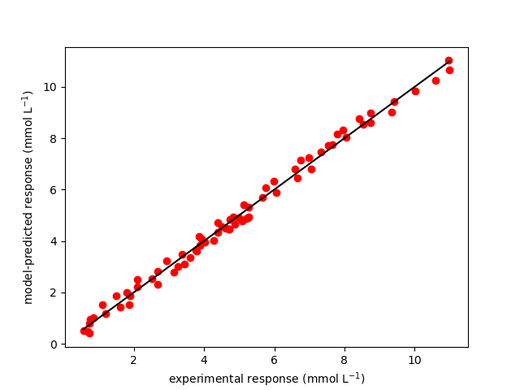
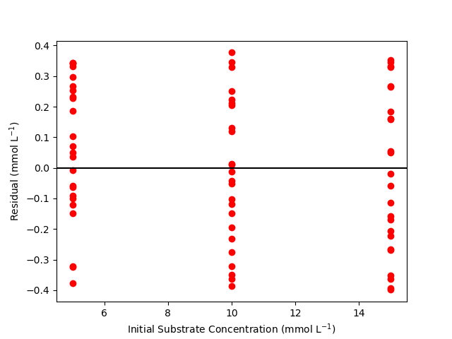
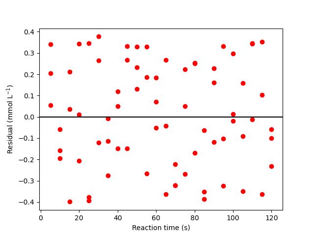
Click Here to See What an Expert Might be Thinking at this Point
The proposed model is quite accurate. Looking at the parity plot, the deviations of the data from the diagonal line is very small, and in the residuals plots, the deviations are random with no apparent trends. The difference between the upper and lower limits of the 95% confidence intervals are small relative to the estimated values of \(V_{max}\) and \(K_m\), and the coefficient of determination is nearly equal to 1.0.
Assessment
When the \(V_{max}\) and \(K_m\) shown in Table 19.14 are used in the proposed rate expression, equation (2), the rate expression is acceptably accurate.
Note
Had there been data for other temperatures, the analysis presented above would have been repeated for each block of same-temperature data to find values of \(V_{max}\), and \(K_m\) at that temperature. Then the Arrhenius expression would have been fit to the resulting \(V_{max}\) vs. \(T\) and \(K_m\) vs. \(T\) data.
19.6 Symbols Used in Chapter 19
| Symbol | Meaning |
|---|---|
| \(b\) | \(y\)-intercept of a linearized response model. |
| \(f\left(\right)\) | Mathematical function of the variables enclosed by the parentheses. |
| \(k\) | Rate coefficient. |
| \(m_i\) | Slope in the \(i\) direction of a linear response model. |
| \(n_i\) | Molar amount of reagent \(i\). |
| \(r\) | Rate of reaction per unit volume. |
| \(r_i\) | Rate of generation of reagent \(i\) per unit volume. |
| \(t\) | Time. |
| \(t_{1/2}\) | Reaction half-life. |
| \(x_i\) | Independent variable in a linear response function. |
| \(y\) | Reactor response, an additional subscripted “expt” denotes the experimentally measured response, an additional subscripted “model” denotes the response predicted by the model. |
| \(C_i\) | Molar concentration of reagent \(i\). |
| \(R^2\) | Coefficient of determination. |
| \(V\) | Volume. |
| \(\alpha\) | Power-law reaction order. |
| \(\nu_i\) | Stoichiometric coefficient of reagent \(i\). |
| \(\Delta n_i\) | Change in \(n_i\). |
| \(\Delta t\) | Change in \(t\). |